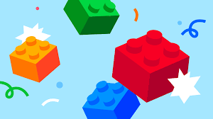

"저의 궁극적인 목표는 백엔드 서버 개발자가 되는 것입니다. 그러나 제가 추구하는 것은 단순히 백엔드라는 분야에만 국한된 전문성이 아니라, 다양한 기술과 지식에 대한 폭넓은 이해입니다. 이러한 저의 목표를 실현하기 위해 구름에서 진행하는 이 과정에 큰 관심을 갖게 되었습니다.
구름은 체계적으로 구성된 커리큘럼으로 개발자로서의 필수 역량을 집중적으로 키울 수 있는 기회를 제공하고 있다고 생각합니다. 이를 통해, 개발의 다양한 영역에 대한 이해를 넓히고, 실질적이고 효율적인 경험을 쌓을 수 있는 기회를 얻을 수 있다고 생각하여 해당 과정에 지원하게 되었습니다.
본 과정을 통해서 저는 실무에서 즉시 활용 가능한 기술을 갖춘 개발자로 성장하고 싶습니다. 특정 분야에만 능통한 개발자가 아닌, 다양한 영역에서 성과를 내는 개발자가 되기를 희망합니다. 개발의 각 분야는 밀접하게 연관되어 있기 때문에, 이 과정에서 얻은 지식과 경험은 어떤 방향으로 성장하든지 큰 도움이 될 것이라고 확신합니다.
또한, 개발은 혼자서 하는 일이 아닌, 팀원들과 소통을 통해 문제를 해결해 나가는 과정이 필수적입니다. 이 과정을 통해 저는 팀원들과의 의사소통 능력을 기르고, 다양한 사람들의 생각과 지식을 나누며 이를 바탕으로 팀 프로젝트에서 좋은 성과를 거둘 수 있는 개발자가 되고 싶습니다.
이를 실현하기 위해 구름에서 제공하는 이 기회를 최대한 활용하여, 저만의 개발 역량을 계속해서 성장시켜 나갈 것입니다."